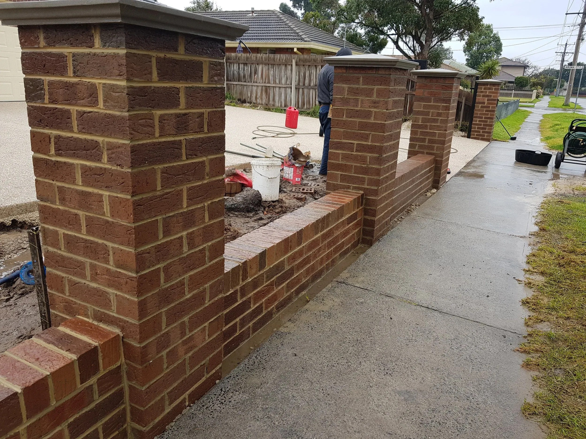
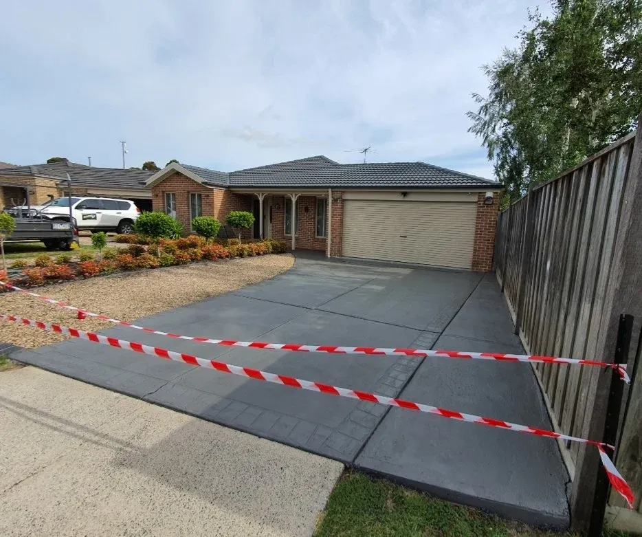

Instant kerb appeal
A clean driveway and facade transform how your home or business looks — and can lift resale and rental appeal.
Professional high-pressure and soft washing that lifts years of grime, mould and lichen from driveways, homes, fences and commercial sites — right across the Latrobe Valley and South-East Melbourne.

SEPWS delivers reliable pressure washing across Traralgon, Morwell, Warragul and the wider South-East Melbourne corridor. From a single stained driveway to a full commercial forecourt, we use the right pressure and technique for each surface.
High-pressure cleaning suits hard surfaces like concrete, pavers and brick, while gentle soft washing protects render, painted weatherboard and roofing. We assess every job first, so your surfaces are cleaned safely and thoroughly.

Regular pressure washing protects your property, your health and your bottom line.
A clean driveway and facade transform how your home or business looks — and can lift resale and rental appeal.
Removing mould, algae and lichen stops them breaking down concrete, paint and timber, so surfaces last longer.
Slippery, moss-covered paths and driveways become safe again — important around entries, pools and walkways.
We check each surface, move what needs moving and protect gardens and fixtures.
Biodegradable treatments are applied to break down mould, lichen and stubborn stains.
We clean with surface-appropriate pressure — high-pressure for hard surfaces, soft washing for delicate ones.
A thorough rinse and a tidy-up leaves your property spotless and ready to enjoy.
Genuine pressure washing jobs from across Gippsland & South-East Melbourne.
Proudly servicing 30+ suburbs from our Morwell base — including these popular areas.
What Gippsland and South-East Melbourne locals ask us most.
Most residential pressure washing jobs in Traralgon and Gippsland are priced by surface area and how heavily soiled the surface is. A standard driveway or single-storey house wash usually falls into an affordable fixed-price range. SEPWS provides a free, no-obligation quote before any work starts.
No — when done correctly. We match the pressure and method to each surface, using high pressure on hard surfaces like concrete and gentle soft washing on render, paint and roofing to avoid any damage.
For most Gippsland homes, a driveway and exterior wash every 12 to 18 months keeps mould and grime under control. Shaded or tree-lined properties may benefit from a yearly clean.
Yes. SEPWS cleans commercial forecourts, car parks, walkways and building exteriors across Dandenong, Pakenham, Berwick and the South-East Melbourne corridor, with flexible scheduling to suit your business.
We service Traralgon, Morwell, Moe, Warragul, Drouin, Pakenham, Berwick, Dandenong, Frankston, Cranbourne, Mornington and 30+ suburbs across Gippsland and South-East Melbourne.
Get a fast, free quote anywhere across Gippsland & South-East Melbourne. No pressure, just a fair price and a great result.